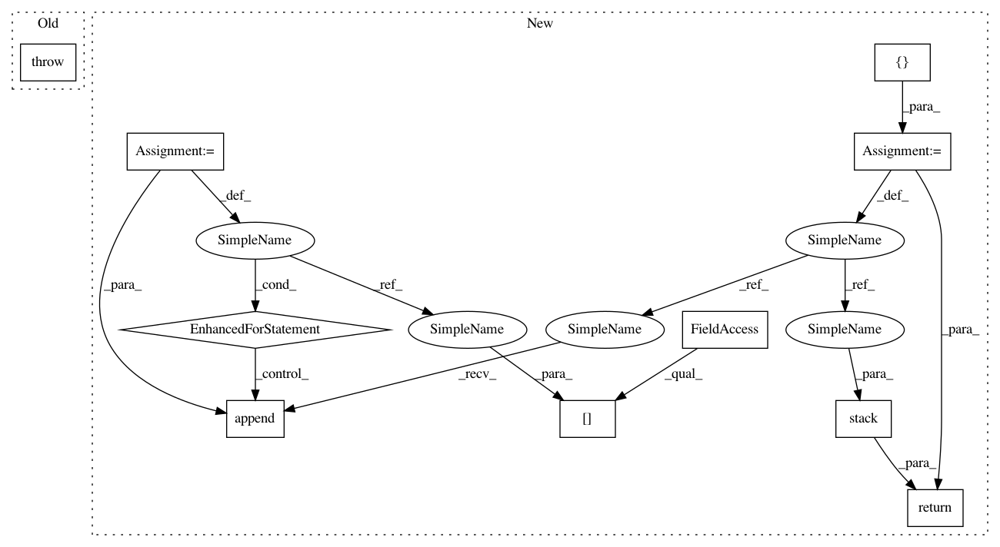

3697053ea6eabb77909d9b43044d784098b48bb9,torch_geometric/nn/models/metapath2vec.py,MetaPath2Vec,__positive_sampling__,#MetaPath2Vec#Any#,72
Before Change
return emb if subset is None else emb[subset]
def __positive_sampling__(self, subset):
raise NotImplementedError
def __negative_sampling__(self, subset):
subsets = []
for keys in self.metapath:
After Change
def __positive_sampling__(self, subset):
device = self.embedding.weight.device
subsets = []
for keys in self.metapath:
adj = self.adj_dict[keys]
subset = adj.sample(num_neighbors=1, subset=subset).squeeze()
subsets.append(subset)
out = torch.stack(subsets, dim=-1).to(device)
out.add_(self.offset[1:].view(1, -1))
return out
def __negative_sampling__(self, subset):
device = self.embedding.weight.device
In pattern: SUPERPATTERN
Frequency: 3
Non-data size: 10
Instances
Project Name: rusty1s/pytorch_geometric
Commit Name: 3697053ea6eabb77909d9b43044d784098b48bb9
Time: 2020-05-18
Author: matthias.fey@tu-dortmund.de
File Name: torch_geometric/nn/models/metapath2vec.py
Class Name: MetaPath2Vec
Method Name: __positive_sampling__
Project Name: rusty1s/pytorch_geometric
Commit Name: 6b9ccdbadbca088c0e6b5be1d08848cad0718bbc
Time: 2020-05-31
Author: matthias.fey@tu-dortmund.de
File Name: torch_geometric/nn/models/metapath2vec.py
Class Name: MetaPath2Vec
Method Name: __positive_sampling__
Project Name: Bihaqo/t3f
Commit Name: b6d26aae5ca36696dbd735370c169be9653df300
Time: 2017-02-03
Author: novikov@bayesgroup.ru
File Name: ops.py
Class Name:
Method Name: tt_ranks